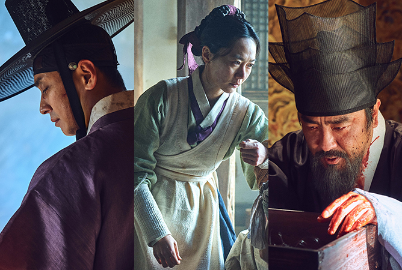
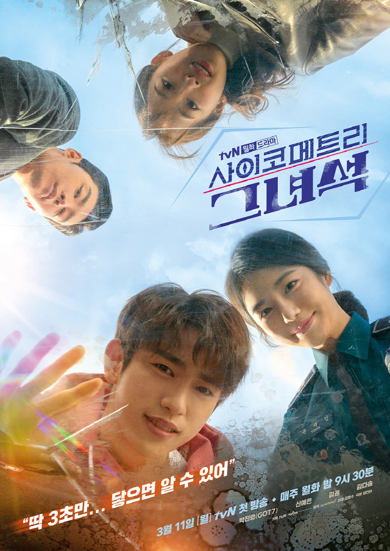

Starring: Ju Ji Hoon, Ryu Seung Ryong, Bae Doon
Synopsis:With a follow-up installment in the works even before the premiere of season one, Kingdom is gearing up to be an acclaimed series you don’t want to miss. Helmed by a stellar cast of seasoned actors, the epic blockbuster takes you back to the Joseon period where a mysterious plague that threatens the kingdom, turns out to be an unprecedented epidemic of zombies.
Starring:Kim So Hyun, Jung Ga Ram, Song Gang
Synopsis: Literally the stuff of every hopeless romantic’s dream, Love Alarm is exactly what it sounds like – an app that alerts you if there’s a secret admirer within 10 metres of your reach. Sparks started flying around high school student Jojo, who gets tangled in a complicated love triangle with two of her fellow classmates courtesy of the dating-equivalent app.

Starring: Park Jin Young, Shin Ye Eun, Kim Dasom
Synopsis:Lee An (Jin Young) has a special psychometry ability. Whenever he touches someone, he can read that person's memory. Using his psychometry ability, Lee An wants to take out evil people in the world. Unlike his handsome appearance, he is not smart at all.
Yoon Jae-In (Shin Ye-Eun) is a girl with a scar in her mind. She tries to hide that. Lee An and Yoon Jae-In happen to meet and they struggle to solve cases.
Starring:Choi Tae Joon, Choi Soo Young, Hwang Chan Sung
Synopsis:
Hoo-Joon (Choi Tae-Joon) is a top star. Geun-Young (Sooyoung) is a magazine reporter. For potential news material, Geun-Young decides to attend an opening ceremony for a club. There, she witnesses top star Hoo-Joon's violent behavior and she also vomits on him by accident. This leads to Geun-Young losing her job. Geun-Young believes Hoo-Joon was behind her firing and she decides to do something about it. Every day, Geun-Young demonstrates in front of Ho-Joon's management office. She begins to receive media coverage on her demonstration and soon Geun-Young becomes famous as an anti-fan. A PD approaches Geun-Young about participating in a reality TV show. The concept for the show revolves around a top star and their anti-fan living together. Geun-Young is in financial difficulties and accepts the offer. Meanwhile, Hoo-Joon is offered the same reality TV show and he accepts to improve his image.
Ho-Joon and Geun-Young try to give each other a hard time on the TV program, but they become attracted to each other.
Starring: Lee Dong Wook, Yoo In Na
Synopsis:
Oh Yoon-Seo is a popular actress. She is famous for her beautiful appearance, but her acting is bad. She gets involved in a scandal with the son from a chaebol family. Her acting career declines precipitously.
Oh Yoon-Seo hears that a famous screenwriter wants her to play the lead female role for a drama series. The character works as a secretary for a lawyer. To gain experience for the role, Oh Yoon-Seo is required to work as a lawyer's secretary for a few months. Meanwhile, Kwon Jung-Rok is an attorney for a law firm. He is arrogant and cold-hearted. One day, his boss asks Kwon Jung-Rok to let actress Oh Yoon-Seo work as his secretary for 3 months. He is not happy about the situation, but he has to accept.
If you can't wait to watch those dramas here a select of some popular and heart stroke dramas: